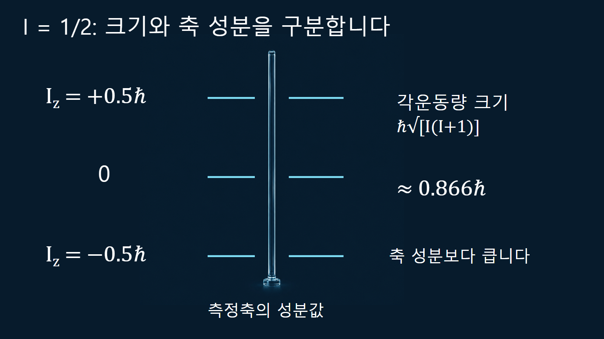
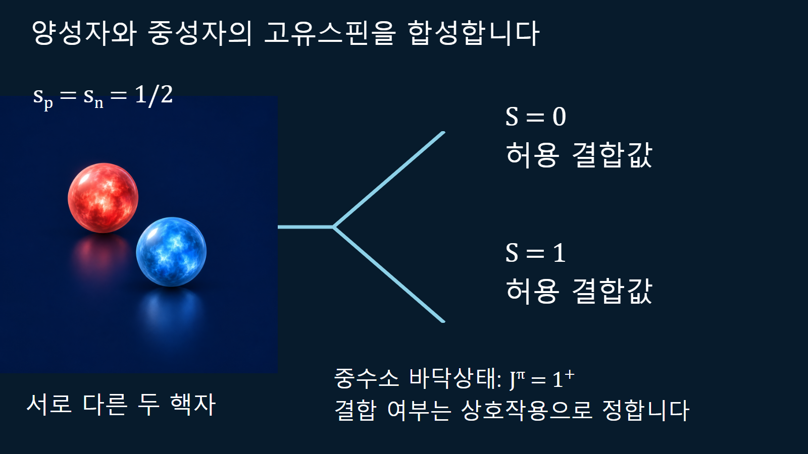

원자와 원자핵의 기초 · 017
스핀과 각운동량
핵자의 궤도운동과 고유스핀이 결합해 만드는 원자핵의 총각운동량
핵스핀은 원자핵 전체의 총각운동량을 나타내는 양자수입니다. 핵 표면이 몇 바퀴 도는지를 말하는 회전속도가 아닙니다. 핵자 하나의 고유스핀, 궤도각운동량, 여러 핵자가 결합한 핵 전체의 스핀을 구별하면 핵자료의 I와 J, 위첨자 패리티를 정확히 읽을 수 있습니다.
고유스핀과 궤도각운동량을 더하는 의미
각운동량은 고전역학에서 위치와 운동량으로 정의되는 회전 운동의 양입니다. 양자역학에서는 그에 대응하는 관측 연산자와 상태를 사용합니다. 핵자에는 공간 운동에서 비롯되는 궤도각운동량 l과 고유한 스핀 s가 있으며, 양성자와 중성자는 모두 s=1/2입니다. 고유스핀을 작고 단단한 공의 자전으로 설명하면 회전반지름이나 표면속도처럼 이 개념에 맞지 않는 양을 도입하게 됩니다. 따라서 그림의 화살표는 각운동량 상태를 구분하는 표시로만 읽습니다.
양자수 I와 실제 각운동량의 크기
핵 전체의 스핀을 I로 표시하면 각운동량 크기는 ℏ√[I(I+1)]이고, 선택한 z축 성분은 Iz=mIℏ입니다. [1] 여기서 ℏ=h/(2π)는 각운동량의 단위를 제공하며, I와 mI 자체는 무차원입니다. mI는 −I부터 +I까지 1씩 변하므로 가능한 값은 2I+1개입니다. 이들은 한 축 성분의 가능한 측정값이며 서로 다른 원자핵 종류를 뜻하지 않습니다. 크기와 한 축 성분은 함께 정할 수 있지만 세 축 성분을 모두 고전 벡터처럼 동시에 확정하지는 않습니다.
예를 들어 I=1/2인 핵의 크기는 약 0.866ℏ이고 z축 성분은 +0.5ℏ 또는 −0.5ℏ입니다. 어느 축 성분의 절댓값도 크기와 같지 않습니다. 이것이 Iℏ를 각운동량의 크기라고 쓰면 안 되는 이유입니다. 두 성분이 있다는 사실만으로 모든 시료에서 위·아래 상태가 정확히 절반씩 점유된다고 정할 수도 없습니다.

p상태 핵자에서 가능한 j를 계산하는 예시
하나의 핵자에서 l과 s를 결합한 총각운동량 양자수는 j로 나타냅니다. 합성 규칙은 |l−s|부터 l+s까지 1 간격으로 가능한 값을 허용합니다. p상태에서는 l=1이고 s=1/2이므로 j=1/2와 3/2가 가능합니다. 두 j에는 각각 2개와 4개의 축 성분 상태가 있어 합계 6개가 됩니다. 이는 궤도 성분 세 개와 고유스핀 성분 두 개를 따로 세어 얻는 3×2=6과 일치합니다. 이 검산은 스핀 자유도를 두 번 곱하는 오류를 잡아 줍니다.
스핀-궤도 상호작용은 같은 l에 속하는 서로 다른 j의 에너지를 가를 수 있습니다. 외부 자기장이 없는 구형의 회전 대칭 계에서는 같은 j에 속한 mj 상태들을 이 효과만으로 각각 다른 에너지라고 해석하지 않습니다. j의 분할과 자기장에 의한 축 성분 에너지 분할은 다른 문제입니다.
두 핵자의 결합에서 허용값과 바닥상태를 구분하는 예시
두 각운동량 j1, j2를 결합하면 총양자수 J는 |j1−j2|부터 j1+j2까지 가능합니다. 서로 다른 양성자와 중성자의 고유스핀 1/2만 결합하면 S=0 또는 1이 나옵니다. 상대 궤도각운동량 L=0을 가정할 때에는 J=S입니다. 실제 중수소핵의 바닥상태는 Jπ=1+이며, 허용된 S=0이 별도의 결합된 중수소 바닥상태로 함께 존재하는 것은 아닙니다. 어떤 상태가 결합하고 낮은 에너지를 갖는지는 핵력의 스핀 의존성과 실제 상호작용이 정합니다.
중수소의 정확한 파동함수에는 L=2 성분도 섞이므로 단순히 평행 화살표 두 개만으로 구조를 모두 설명하지 않습니다. 또한 동일한 핵자 두 개에는 파울리 원리의 반대칭 조건이 추가됩니다. 구별 가능한 두 각운동량의 합성 목록을 동일 핵자에게 그대로 적용하면 허용되지 않는 상태까지 포함할 수 있습니다.

짝지음은 단순한 화살표 지우기가 아닙니다
핵자들의 각운동량을 차례로 결합하면 핵 전체의 I 또는 J를 얻습니다. 짝수-짝수 핵의 바닥상태가 0+인 경향은 짝지음 상관과 연결됩니다. 탄소-12의 바닥상태도 0+입니다. 같은 j에서 m과 −m인 시간역전 상태는 짝지음을 설명하는 재료가 되지만, 두 숫자를 지웠다는 사실만으로 전체 상태가 순수한 J=0이라고 증명되지는 않습니다. 올바른 합성 상태는 필요한 성분의 양자적 중첩으로 구성합니다. 음의 j라는 별도 각운동량 크기를 도입해서도 안 됩니다.
| 기호 | 무엇을 표시하는가 | 혼동하기 쉬운 해석 |
|---|---|---|
| s | 핵자 고유스핀 1/2 | 핵 표면의 자전속도가 아닙니다 |
| l | 핵자 궤도각운동량 양자수 | 고정 궤도를 그린 경로가 아닙니다 |
| j | 핵자 하나의 l과 s 합성 | 핵 전체 I와 항상 같지 않습니다 |
| I 또는 J | 핵 전체 총각운동량 양자수 | 음수 크기를 갖지 않습니다 |
| m | 선택한 축 성분의 양자수 | 음수도 허용되며 크기와 다릅니다 |
스핀 옆의 패리티는 전하 표시가 아닙니다
핵자료의 1+에서 숫자는 스핀이고 +는 공간 반전에 대한 파동함수의 대칭성인 패리티입니다. 양전하나 양의 에너지를 의미하지 않습니다. 단일 핵자 궤도에서는 패리티가 (−1)l이므로 s상태(l=0)는 양, p상태(l=1)는 음입니다. 여러 핵자의 상태에서는 전체 공간 파동함수의 대칭성을 봐야 합니다. 같은 핵종도 들뜬상태마다 스핀과 패리티가 달라질 수 있어 바닥상태 표기 하나를 모든 전이에 적용하지 않습니다.
공명과 감마전이를 읽기 위한 확인 순서
중성자와 표적핵이 반응하면 입사 채널의 스핀과 상대 궤도각운동량을 결합해 어떤 복합핵 상태로 연결될지 살펴봅니다. 감마전이를 해석할 때에도 처음과 나중 상태의 스핀·패리티가 전이 다중극의 후보를 제한합니다. 후보가 허용된다는 사실만으로 전이확률이나 반응단면적이 정해지는 것은 아닙니다. 에너지, 파동함수와 전이 행렬원소 등 추가 자료가 필요합니다.
핵스핀 자료를 읽을 때 남겨야 할 구분
먼저 그 값이 핵자 하나의 j인지 핵 전체의 I인지 확인합니다. 다음으로 크기의 양자수인지 특정 축 성분인지 구분하고, 바닥상태인지 들뜬상태인지 확인합니다. 이렇게 읽으면 I=1/2의 두 측정 성분과 p상태의 여섯 구성 상태, 중수소의 1+ 바닥상태를 같은 종류의 숫자로 혼동하지 않습니다. 계산으로 얻은 허용값은 핵자료에 실린 실험 상태와 대조해야 합니다.